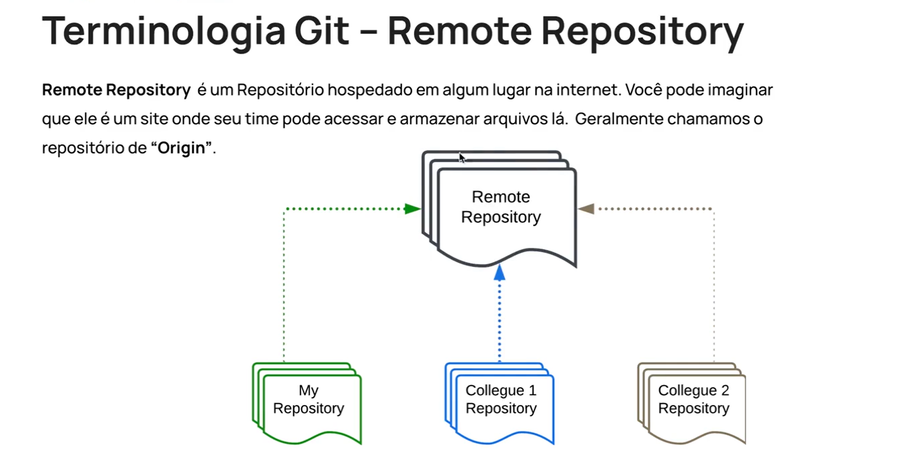

Introduction - What is remote repositories and how to use them
Intro
Aqui iremos aprender a trabalhar com repositorios remotos.
Aqui iremos aprender a trabalhar com repositorios remotos.
Quando participamos de um projeto onde temos uma equipe trabalhando em um mesmo projeto. Precisamos fazer alteracoes nesse codigo, geralmente fazemos essas alteracoes em nosso computador, ou seja, em nosso repositorio local.
No momento em que fazemos alguma mudanca ness codigo e queremos compartilhar esse projeto/alteracoes com outras pessoas da equipe, iremos precisar de um repositorio remoto onde permita que as pessoas que fazem parte do projeto trabalhe de forma simultanea e consigam visualizar todas as alteracoes que foram feitas pelos outros membros da equipe.
Basicamente um repositorio remoto, e um local onde fica nosso projeto na internet. Onde usamos para armazenar arquivos e compartilhar as alteracoes feitas e compartilhar com a equipe.
Geralmente o nome desse repositorio principal e chamado de origin:

Para conseguirmos realizar essas atualizacoes em um repositorio remoto existem alguns comandos no git que permite que a gente faca todas essas atualizacoes.
Permite que a gente crie uma copia local do repositorio remoto. Com isso todos os historicos e arquivos de commits seram enviados para nossa maquina. Conforme esse codigo é atualizado pela equipe, ira sofrer algumas mudancas onde conseguimos fazer downloads dessas mudancas para nosso repositorio local.
Com ele conseguimos ter todas as atualizacoes que foram feitas depois dentro de nosso repositorio local.
Permite que enviemos todos os codigos atualizados de nosso repositorio local para o repositorio remoto.